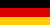
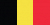
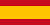

Liverpool FC's
European History
Liverpool are England's most successful football club in European competitions, collecting a whopping 13 trophies across tournaments, of which 6 are Champions League (former European Cup) titles. The first came under Bob Paisley, who added two more to the trophy cabinet before his successor Joe Fagan also won the famous cup. Rafael Benitez oversaw the Miracle of Istanbul in 2005, and the most recent came under Jürgen Klopp in 2019.
Rome: the groundbreaker
Liverpool
3 — 1
Borussia M.
/romei1.jpg)
/romei2.jpg)
/romei3.jpg)
The 1977 European Cup Final was played by Liverpool and Borussia Mönchengladbach on 25 May 1977 at the Stadio Olimpico in Rome, Italy. Both teams were appearing in their first European Cup final, although the two sides had previously met in the 1973 UEFA Cup Final, which Liverpool won 3–2 on aggregate over two legs.
Terry McDermott put us on the lead, but Allan Simonsen equalised for Mönchengladbach early in the second half. Liverpool regained the lead midway through the second half with a goal from Tommy Smith, and Phil Neal made sure we won the match 3–1 to secure our first ever European Cup! The victory came a year after they had wonour triumph at the UEFA Cup, which meant that Bob Paisley became the first manager to win the UEFA Cup and European Cup in successive seasons.
Bringing it home
Liverpool
1 — 0
C. Brugge
/london1.jpg)
/london2.jpeg)
/london3.jpg)
The very next year, Liverpool faced Club Brugge of Belgium for the 1978 European Cup Final on 10 May 1978 at Wembley Stadium, in England – home of the reigning champions. The two sides had met once before in European competition, when they contested the 1976 UEFA Cup Final, which Liverpool won 4–3 on aggregate.
Kenny Dalglish scored in the second-half from a Graeme Souness pass, making it 1–0. The only goal of the match secured Liverpool's second European Cup and third European trophy in succession, and in so we became the first English team to retain the European Cup.
Paisley makes it 3
Liverpool
1 — 0
R. Madrid
/paris1.jpg)
/paris2.jpg)
/paris3.jpg)
At the 1981 European Cup Final, played on 27 May 1981 at the Parc des Princes, Paris, our adversary were Real Madrid. It was the final match of the 1980–81 season of Europe's premier cup competition, the European Cup. Although our campaign was glistening, Liverpool were the underdogs for the firs time, as Real Madrid were appearing in their 9th final and had previously won the competition 6 times.
Despite the odds, Alan Kennedy scored the final's only goal to win the match 1–0. The triumph placed Bob Paisley as the first manager to win the competition three times.
Rome: back again
Liverpool
1 — 1
A. S. Roma
4–2
on penalties
/romeii1.jpg)
/romeii2.jpg)
/romeii3.jpg)
The 1984 European Cup Final saw Liverpool and Roma take the decision to the penalties. On 30 May 1984, again at the Stadio Olimpico – the venue where we were crowned European kings for the first time –, we played our fourth final, having already won the previous 3. Even so, Roma went into the match as favorites, as the final was held at their home ground.
We took the lead in the first half when Phil Neal scored, but Roberto Pruzzo equalised for Roma before half-time. The score didn't change throughout the second half and extra-time, so the match went to a penalty shoot-out, which Liverpool won by 4–2. This meant that we would go on to claim our fourth European Cup in just 7 years! An amazing feat – and one we would have to cherish for a long time, because the next one wouldn't come for 20 years...
The Miracle of Istanbul
A. C. Milan
3 — 3
Liverpool
2–3
on penalties
/istanbul1.jpg)
/istanbul2.jpg)
/istanbul3.jpg)
They don't call it that for nothing. As other clubs rose to challenge Liverpool's overwhelming superiority across England and Europe, the early 90s saw the beginning of our sorrow, one that would last for many painful years still. A very few joyful moments between then and now standout when we look back, and they're all accompanied by the face of a man called Steven Gerrard. Stevie would go on to change the course of the now called UEFA Champions League Final of 2004–05.
Milan were regarded as favourites before the match and acted like it on the pitch. They took the lead within the very first minute through captain Paolo Maldini, and it wouldn't be long before Hernán Crespo added two more goals, sending our boys 3–0 down in half-time. Early in the second half, however, Gerrard headed in our first goal in the match and waved his arms at the crowd and his team-mates, looking to inspire a comeback. In a dramatic six-minute spell, we leveled the score at 3–3, with the other two goals coming from Vladimír Šmicer and Xabi Alonso.
It would remain like so during extra time, so a penalty shoot-out win was required one more time to make us champions. The score was 3–2 to Liverpool after Jerzy Dudek saved Andriy Shevchenko's penalty, securing a fifth European Cup for us. Liverpool's comeback became known as The Miracle of Istanbul, and is regarded as one of the greatest finals in the history of the tournament.
The Klopp effect
Tottenham
0 — 2
Liverpool
/madrid1.jpg)
/madrid2.jpg)
/madrid3.jpg)
The 2019 UEFA Champions League Final was played at the Metropolitano Stadium in Madrid, Spain, on 1 June 2019, between English sides Liverpool, in our ninth final overall and second in a row, and Tottenham Hotspur, in their first ever European Cup final. It was the seventh Champions League final – and the fourth of the decade – to feature two teams from the same association, and the second all-English final.
Liverpool won rather unsurprisingly by 2–0 with goals by Mohamed Salah and Divock Origi (one each). Winners for the sixth time, we saw the end of the dry spell and went on to secure other titles immediately after this triumph: Super Cup, FIFA Club World Cup, and, at last, a Premier League trophy!